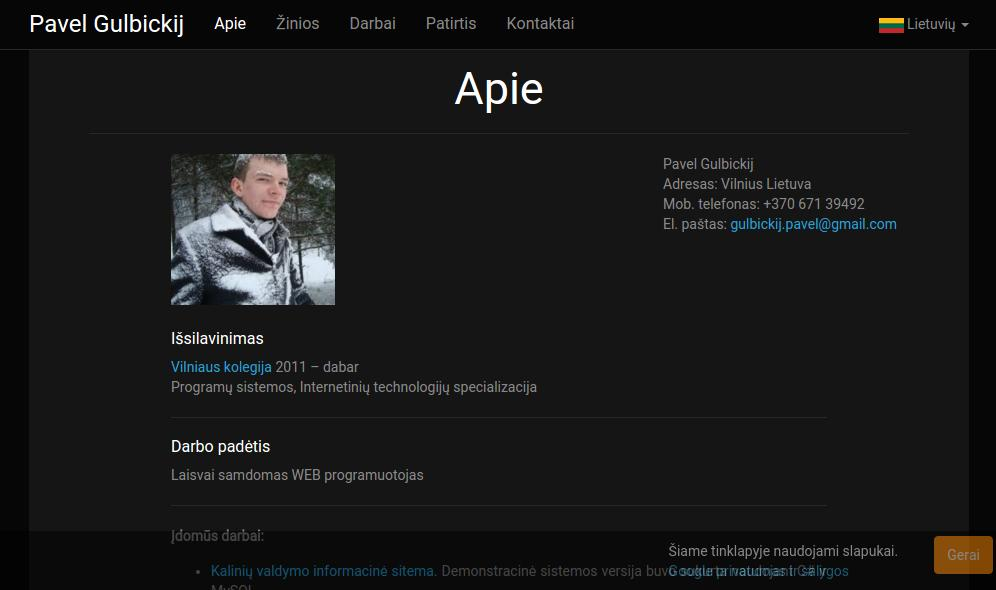
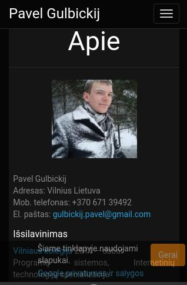
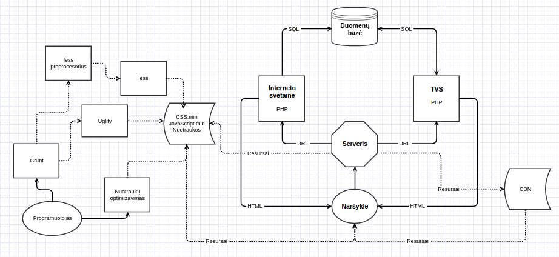

Vilniaus kolegija
Elektronikos ir informatikos fakultetas
Programinės įrangos katedra
Reaktyvaus dizaino asmeninė interneto svetainė
Vadovas: Virgilijus Kuklierius
Diplomantas: Pavel Gulbickij
Vilnius 2016
Baigiamojo darbo tikslas
- Sukurti reaktyvaus dizaino asmeninę svetainę
- Sukurti dinaminė turinio valdymo sistemą
Svetainės reaktyvumas, reaktyvus dizainas
Vaizdas didėlios raiškos ekranuose

Vaizdas mobiliosiose įrenginiose

Baigiamojo darbo ruošimo eilga
- Realizavimo priemonių pasirinkimas
- Svetainės struktūros piešimas (angl. Wireframes)
- Svetainės struktūros šablono kūrimas
- Duomenų bazės kūrimas
- Pagrindinio svetainės funkcionalumo kūrimas
- Turinio valdymo sistemos funkcionalumo nustatymas ir kūrimas
- Svetainės skličių šablonų kūrimas
- Svetainės struktūros užpildymas testinėmis duomenemis
- Svetainės ir turinio valdymo sistemos testavimas
Sistemos veikimo diagrama

Skirtingų naršyklių palaikymas
Ištestuota su:
| Chrome |
Opera |
Firefox |
Safari |
Explorer |
AOSP |
| 43+ |
32+ |
40+ |
9+ |
10+ |
4.4+ |
Baigiamojo darbo ruošimo metu buvo sukurta: